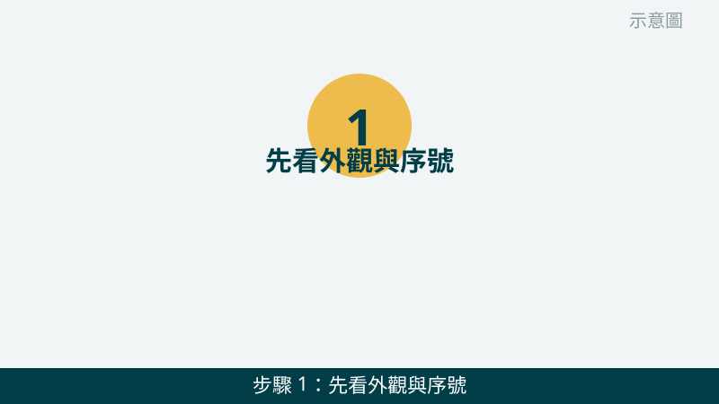
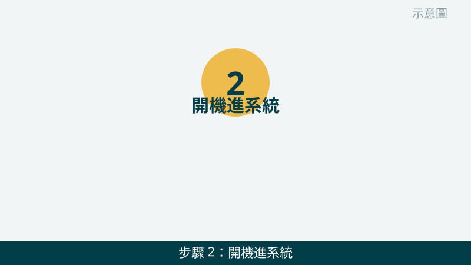
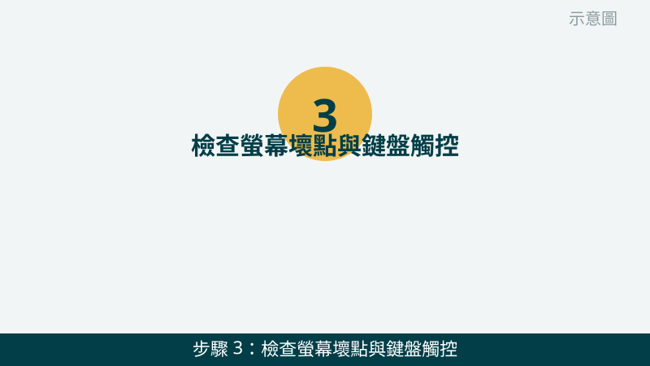
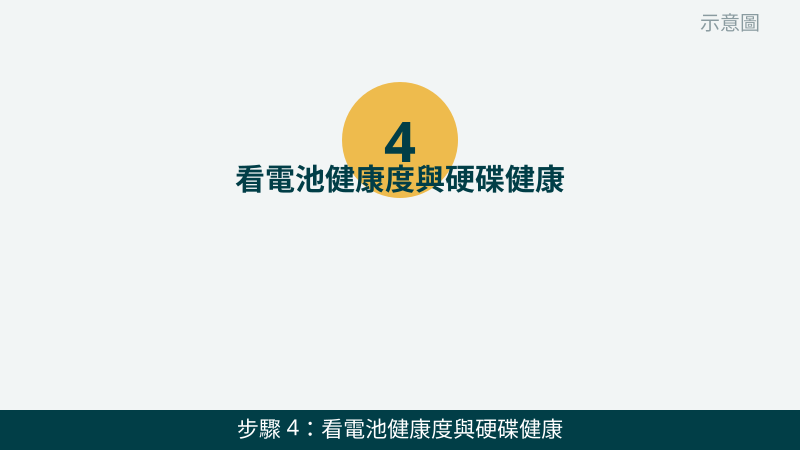
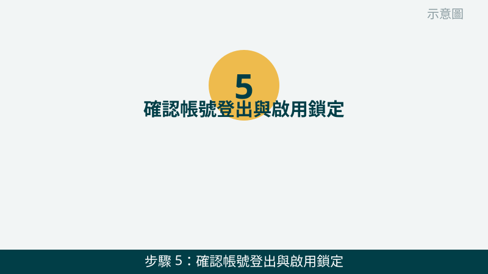
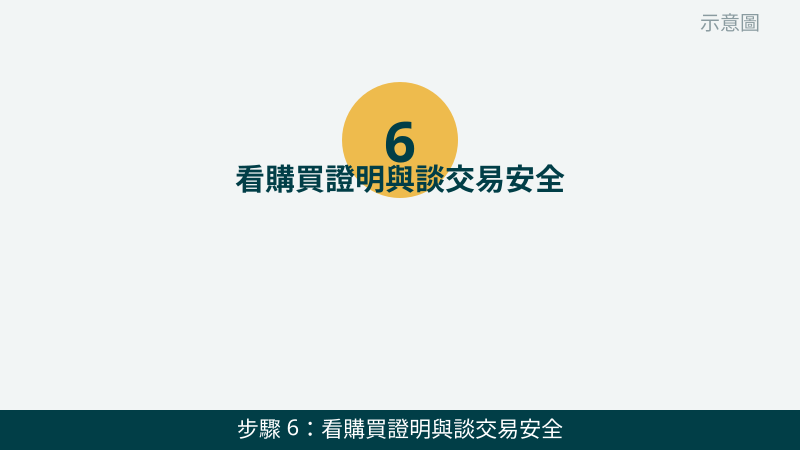

二手電腦能不能買，不只看價格和外觀，更要看它能不能正常用、能不能換成您的帳號、裡面的零件健不健康。這三件事沒驗，買回家才發現問題，處理起來最麻煩。
開始之前先跟您說明一個原則：「現場驗完再付款」。不管對方說得多好，開機、帳號、健康度這幾項一定要在現場親眼看到，沒看到就先不要付款；不確定的畫面就拍照起來，回家慢慢問也來得及。
驗機畫面先傳給我們看
把規格、電池與硬碟健康度、帳號畫面拍下來傳 LINE，我們先幫您看有沒有明顯異常。先免費評估，確認後再決定要不要買。
二手電腦面交驗機清單（照順序驗）
- 1. 先看外觀與序號：撞傷、裂痕、螺絲痕、序號是否一致。請看機身四個角、轉軸、螢幕邊框有沒有撞傷或裂痕，底部螺絲有沒有明顯拆過的痕跡，再對一下機身序號與系統裡顯示的序號是不是同一組。怎麼判斷：外傷明顯、序號對不上，就要多留心，先拍照問我們再決定。

示意圖（非官方截圖） - 2. 開機進系統：看能不能正常開機、登入、有沒有異常訊息。請親自開機一次，從開機到進桌面要多久、有沒有跳出錯誤、藍屏或要求輸入不明密碼。怎麼判斷：能順利進桌面、操作反應正常，才算通過第一關；開不了機、卡在登入畫面，就先不要付款，拍照問我們。

示意圖（非官方截圖） - 3. 檢查螢幕壞點與鍵盤觸控：純色畫面看亮暗點、每個鍵與觸控板都試一遍。請把螢幕切到全白與全黑的純色畫面，仔細看有沒有一直亮著或一直暗著的點；再把鍵盤每個鍵按一遍、觸控板點一點、滑一滑。怎麼判斷：純色畫面上有固定不動的亮點或暗點就是壞點；有按鍵沒反應、觸控板亂跳，都要記下來問清楚。

示意圖（非官方截圖） - 4. 看電池健康度與硬碟健康：耗電快不快、硬碟有沒有警告。請在系統裡看電池健康度，並用硬碟健康資訊確認有沒有警告或異常；同時留意用電池時電量是不是掉得特別快。怎麼判斷：健康度明顯偏低、硬碟出現警告，代表這兩個零件可能不久就要花錢處理，買之前要先把這筆成本算進去，不確定就拍照問我們。

示意圖（非官方截圖） - 5. 確認帳號登出與啟用鎖定：Apple ID、微軟帳號都要在現場解除。請對方在您面前登出 Apple ID 或微軟帳號，並確認啟用鎖定已經解除，裝置可以登入您自己的帳號。怎麼判斷：現場能順利登出、解除鎖定、換您的帳號登入，才算通過；對方說回家再登出、晚點再解除，請先不要付款。

示意圖（非官方截圖） - 6. 看購買證明與談交易安全：面交驗機，不要先匯款給陌生人。請對方出示購買證明或相關單據，確認來源與規格是否相符，並把約定的內容、配件清單記下來。怎麼判斷：有證明、現場驗完、當場交貨付款最安心；對方要求先匯款、不能面交驗機，就請先停下來，拍照問我們再決定。

示意圖（非官方截圖）
出現這些情況，就別再自己試了
- 帳號登出不了、啟用鎖定解除不了——請先不要付款，買回家可能沒辦法用自己的帳號登入
- 對方要求先匯款、不能面交驗機、或不願意現場開機測試——請先停下來，不要先匯款給陌生人
- 機身鼓起、電池膨脹、聞到異味——請立刻停用，不要自行拆卸或擠壓，先拍照問我們
- 序號對不上、規格與當初說的不一樣——請先拍照問我們，不要急著付款
如果您已經買了二手電腦，回家才發現有疑問，也可以把驗機時拍的畫面傳給我們看：規格、健康度、帳號狀態越完整，我們越能幫您判斷下一步該怎麼處理。
常見問題
面交時間很趕，驗機最少要驗哪幾項？
時間再趕，也請至少驗三項：能不能正常開機進系統、帳號有沒有登出與解除啟用鎖定、電池與硬碟健康度有沒有明顯異常。這三項關係到能不能用、能不能換成您的帳號，沒驗就買，後續處理起來最麻煩。
賣家說帳號回家再登出，可以先買嗎？
建議不要。帳號沒有在面交當場登出、啟用鎖定沒有解除，回家後您可能沒辦法登入自己的帳號使用，聯絡不上賣家就更難處理。請在面交當場確認登出與解除鎖定，確認完再付款，比較安心。
買了二手電腦之後，可以請您幫忙檢查嗎？
可以。把驗機時拍到的畫面、規格與健康度資訊傳給我們，我們會先免費幫您評估；如果需要實機進一步檢測，檢測費 $300（有修全額折抵），修好才收費，價格確認後再決定修不修。
相關文章：電腦變慢卡頓・開機很久、自救百科總覽